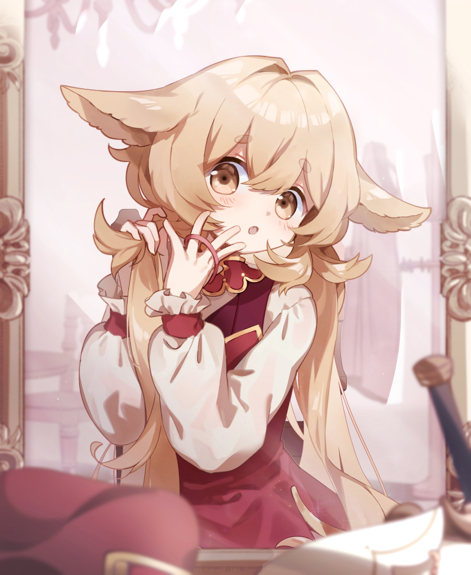

冒険者のキャラクターの朝の一幕です。使用ソフトはClip Studio Paint、制作時間は約20時間。
リピートクライアントからのご依頼です。
一度目のご依頼ではキャラクターイメージの通りの元気なポーズで描きましたが、
二度目である今回はそのキャラクターの日常に寄り添った形のイラストを作成いたしました。
背景には光を多く取り入れ朝日を表現。
豪奢な鏡や一人掛けのチェアとテーブルなどから、宿の中を表現しました。
こだわった点はちょっとだけ隙があるような表情と、画面全体の情報量バランスです。
普段は剣を持って戦っているが、身支度のときであるためぼんやりとした表情を強く意識して描画。
顔、鏡の前に置かれた小物が画面全体で三角形を作り、視線誘導をしっかり行うように意識して配置しました。